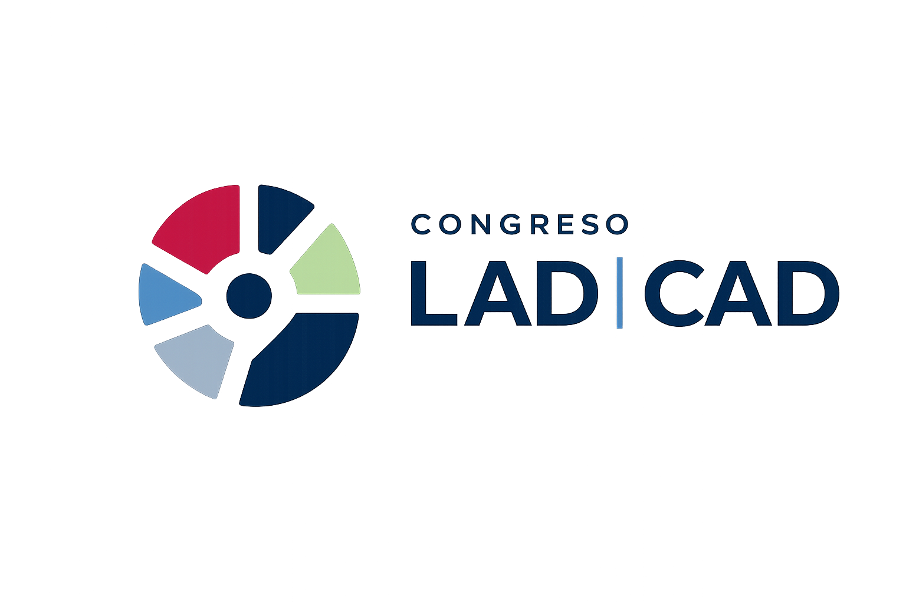
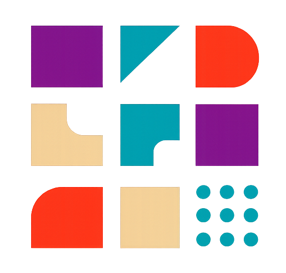

Primer Congreso Internacional CAD - LAD:
“Diseño, Accesibilidad y Tecnologías para la Transformación Social”
Jueves 12 y Viernes 13 de Noviembre de 2026
UNLa - Buenos Aires, Argentina
1ERA JORNADA DE DISEÑO Y FABRICACIÓN DIGITAL
Diseñar haciendo, fabricar transformando
La 1ª Jornada de Diseño y Fabricación Digital en el LAD (JDFD LAD 2026) es un espacio de encuentro, reflexión e intercambio colectivo acerca de las transformaciones en la gestión del diseño y de la innovación en la actual era de digitalización creciente de los procesos productivos, con el objetivo de promover la innovación y el desarrollo de proyectos que integren diseño y tecnología.
Esta primera edición, organizada por el Laboratorio de Diseño (LAD) del Departamento de Humanidades y Artes de la Universidad Nacional de Lanús (UNLa), se llevará a cabo el día jueves 27 de agosto de 2026 en el Polo Tecnológico de la universidad (Predio Yrigoyen), en Lanús, Buenos Aires, Argentina.
Bajo el propósito de reunir a los actores de la innovación en fabricación digital aplicada al campo del diseño y de otras ciencias, la jornada invita a investigadores, docentes universitarios y de escuelas técnicas, profesionales de la industria y estudiantes de grado y posgrado a promover la divulgación de experiencias, investigación y desarrollo. En el encuentro se combinarán charlas virtuales matutinas, espacios de talleres y muestras, y conferencias presenciales vespertinas, con el objetivo de promover un ecosistema de fabricación digital en Argentina.
CONVOCATORIA: MODALIDADES DE PARTICIPACIÓN

COMUNICACIÓN BREVE
Hasta 1000 palabras y 20 imágenes. Se publicará en libro de Actas.
Ir al Formulario
Descargar condiciones

ARTÍCULO
Artículo completo con máximo 4000 palabras. Se publicará en libro de Actas de la Jornada en 2027 con ISBN propio en formato de libro.
Ir al Formulario
Descargar condiciones

EXPERIENCIA EN VIVO
Podrás compartir tu experiencia en tiempo real durante el evento. Duración 20 minutos.
Ir al Formulario
Descargar condiciones

MICROTALLER
Taller interactivo de participación mediante inscripción previa y cupos limitados. Duración 40 minutos en total.
Ir al Formulario
Descargar condiciones

ASISTENTE
Participación del evento como asistente. La participación es grstuita y con certificación de asistencia
Ir al Formulario
Descargar Certificado